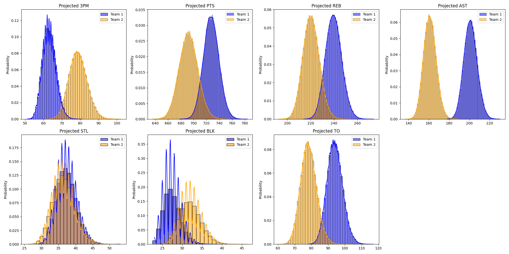

Codex NBA Fantasy — Agentic Matchup Analytics

Why I built this
Weekly fantasy decisions — who to start, who to stream, who to drop — are usually made on vibes. This project replaces the vibes with a reproducible pipeline: pull the live league state from Yahoo, project the next ~7 days of head-to-head category math, and ship a single Excel workbook that tells me exactly where my matchup is fragile and which waiver pickups would actually move those categories.
It runs on demand or on a daily cron, and it’s been the backbone of my real fantasy season.
What it produces
Each run writes one Excel workbook with four sheets:
Matchup Board. Head-to-head category projections for me vs. my scheduled opponent across the nine standard Yahoo categories (FG%, FT%, 3PTM, PTS, REB, AST, ST, BLK, TO). Three time slices per category — Now (already locked in), Future (remaining games × projected per-game), and Total. Makes it explicit whether a lead is real or fragile.
Average Impact. Season-average impact per player, with a graceful fallback to prior-season averages when the current sample is too small (GP < 10). This avoids the classic “one good game makes a stretch waiver pickup look elite” trap.
Free Agents. Ranked waiver-wire candidates filtered by which categories I am actually losing in this matchup, scored by remaining games × per-game impact on those categories. Not generic rest-of-season rankings — pickups specifically tuned to flip the categories that matter this week.
Injury Tracking Lists. A persistent watchlist of injured / suspended / low-availability players, merged from Yahoo statuses, ESPN’s injury feed, and free-text player notes. Each row carries a return-rate score, expected return date, the keyword that triggered the pickup (“questionable”, “doubtful”, “G-League”, “minutes restriction”…), a recency bucket, and per-game category impact. The sheet is reloaded from the previous run on every refresh, so dropoffs and upgrades day-over-day are visible.
Architecture
┌─────────────────┐ OAuth 2.0 ┌──────────────────────┐
│ yahoo_auth.py │ ───────────────▶ │ Yahoo Fantasy API │
└────────┬────────┘ └──────────┬───────────┘
│ tokens │ XML/JSON
▼ ▼
┌─────────────────┐ ┌──────────────────────┐
│ yahoo_client.py │ ◀────────────── │ data_fetch.py │
└─────────────────┘ │ (rosters, matchups, │
│ stats, schedules) │
└──────────┬───────────┘
│
┌────────────────────────┼────────────────────────┐
▼ ▼ ▼
┌─────────────────────┐ ┌─────────────────────┐ ┌─────────────────────┐
│ projections.py │ │ external_injuries.py│ │ NBA schedule API │
│ (totals / future / │ │ (ESPN feed) │ │ (games remaining) │
│ free-agent score) │ └─────────────────────┘ └─────────────────────┘
└──────────┬──────────┘
▼
┌──────────────────────┐
│ output_writer.py │ ──▶ output/matchup_report.xlsx
└──────────────────────┘Module map:
| File | Responsibility |
|---|---|
src/config.py |
Loads and validates .env settings |
src/yahoo_auth.py |
OAuth 2.0 flow, token persistence, automatic refresh |
src/yahoo_client.py |
Thin Yahoo Fantasy API wrapper with retry + tree-walking helpers |
src/data_fetch.py |
League / team / roster / stat fetchers and the schedule heuristic |
src/projections.py |
Per-player projections, matchup category math, free-agent scoring |
src/external_injuries.py |
ESPN injury feed + normalized name matching |
src/output_writer.py |
openpyxl Excel writer with conditional formatting |
run_manual.py |
Main entrypoint — full report |
run_matchup_board.py |
Matchup-board-only entrypoint (custom week / opponent) |
run_week22_playoff_boards.py |
Playoff-week variant for two arbitrary teams |
Design notes
Stats are computed, not scraped. All projections come from the Yahoo Fantasy API. ESPN is used only for injury context.
Time-aware projections. Splitting each category into Now / Future / Total was the most useful UX choice in the whole project. A 12–11 lead in 3PTM looks different when Now is 10–4 vs. when Now is 2–9 — and the board makes that obvious without me having to mentally subtract.
Sample-size guardrails. Per-game rates fall back to season averages or prior-season averages when fewer than two games exist in the rolling window. Prevents waiver candidates from looking artificially elite off a single hot night.
Injury intelligence as a first-class feature. The Injury Tracking sheet isn’t just an INJ tag — it scores each watched player on (1) keyword urgency parsed from Yahoo player notes, (2) ESPN’s published expected return date, (3) recency of the news, and (4) per-category fantasy impact. Names listed in MANUAL_TRACK_PLAYERS are pinned regardless of status.
Name normalization. Yahoo, ESPN, and the NBA schedule feed disagree on accents, suffixes, and punctuation. external_injuries.normalize_name makes the joins reliable.
Token hygiene. Secrets in .env, OAuth tokens in data/yahoo_tokens.json, both gitignored.
Quickstart
git clone <repo-url>
cd codex-nba-fantasy-analytics
pip install -r requirements.txt
cp .env.example .env # then fill in Yahoo client id/secret + league + team
python run_manual.py # one-time OAuth on first runCustom-week scouting:
python run_matchup_board.py --week 23 # auto-detect opponent
python run_matchup_board.py --week 24 --my-team-id 1 --opponent-team-id 12
python run_matchup_board.py --week 25 --team-a-id 3 --team-b-id 8 # any two teamsOptional daily cron:
./install_daily_cron.sh # default 08:00
./install_daily_cron.sh 7 30 # custom 07:30
./remove_daily_cron.shRoadmap
- Streamer-of-the-day suggestions based on schedule density
- Punt-build detector (auto-identify which categories the roster is implicitly punting)
- Slack / email summary in addition to the Excel report
- Backtest harness for projection accuracy